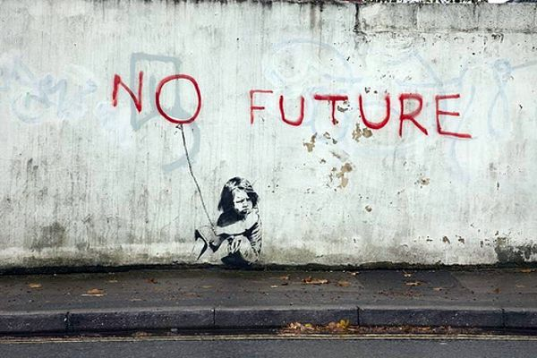

Credit
This piece appears to be one of Banksy’s most moving pieces of art. It appeared on the wall of a private residence in Southampton, but was painted over in November 2010 just one week after discovery. The letter O in the caption doubles as a balloon giving the viewer a dose of irony since balloons are more often a cause of joy for children.
2010-11
Spray Paint
London, UK